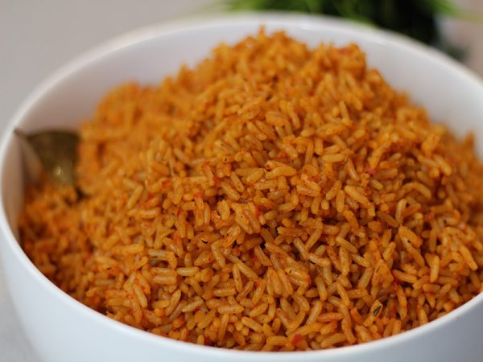

Nigerian Jollof Rice
A smoky, delicious one-pot rice dish popular across West Africa.
Recipe Details
Prep Time: 20 minutes | Cook Time: 55 minutes | Servings: 6 | Difficulty: Medium
Ingredients
- 3 cups long-grain rice
- 6 ripe tomatoes, blended
- 3 red bell peppers, blended
- 1 large onion
- Half cup of vegetable oil
- 2 cups chicken stock
Instructions
- Blend the tomatoes, peppers, and onion together.
- Fry the blended mixture in oil for 20 minutes.
- Add stock and seasoning, then bring to a boil.
- Wash and add the rice, stir well.
- Cover tightly and steam on low heat for 30 minutes. Do not lift the lid!
Tips
- Use parboiled rice for the best texture.
- The smoky bottom layer is intentional — it is the best part!
- Cover tightly with foil before the lid to trap steam.
